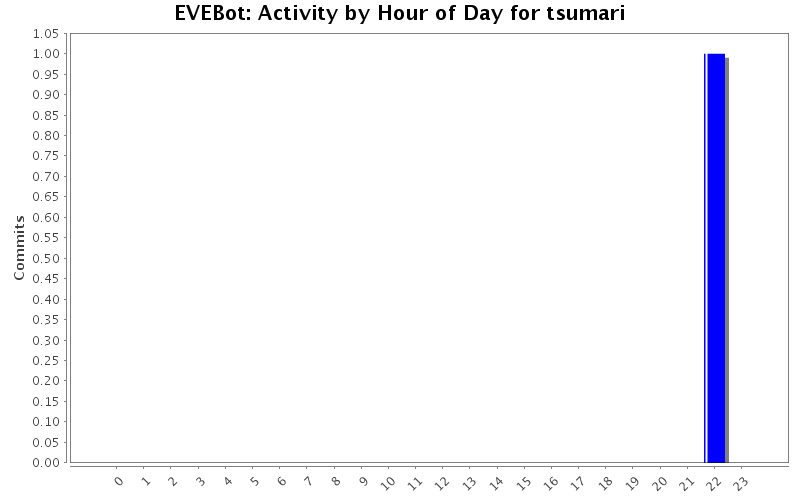
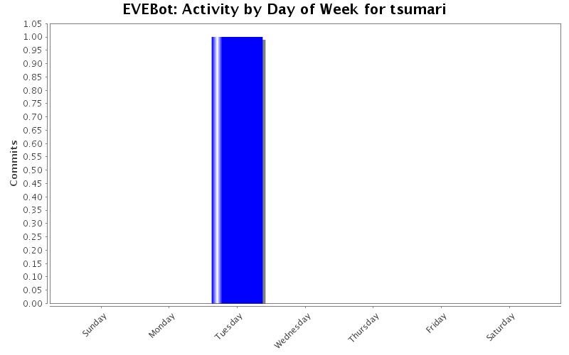

EVEBot Developers: tsumari
«
Development Statistics for EVEBot
«
Developers
Login name:
tsumari
Total Commits:
1 (0.0%)
Lines of Code:
3 (0.0%)
Most Recent Commit:
2008-07-08 21:44
Tweet this:
Activity by Clock Time


Activity in Directories
Directory
Changes
Lines of Code
Lines per Change
Trunk/EVEbot/core/
1 (100.0%)
3 (100.0%)
3.0
Most Recent Commits
tsumari
2008-07-08 21:44
Rev.:
697
3
lines of code changed in
1 file
:
Trunk/EVEbot/core
: obj_Ship.iss
(+3 -2)
Generated by
StatSVN
0.7.0